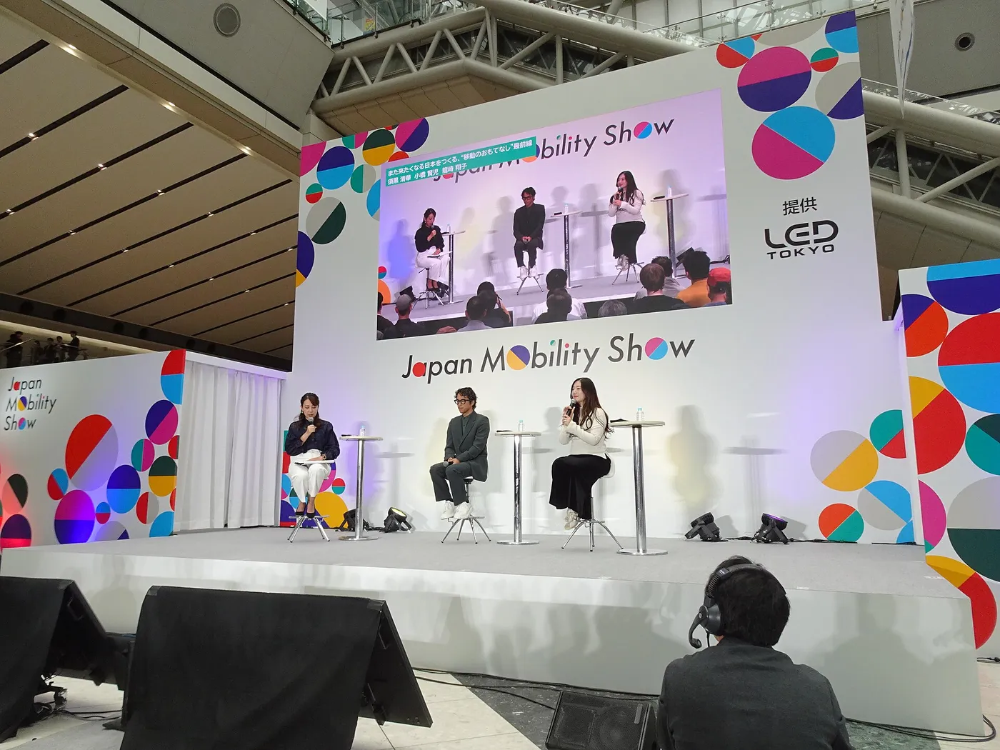
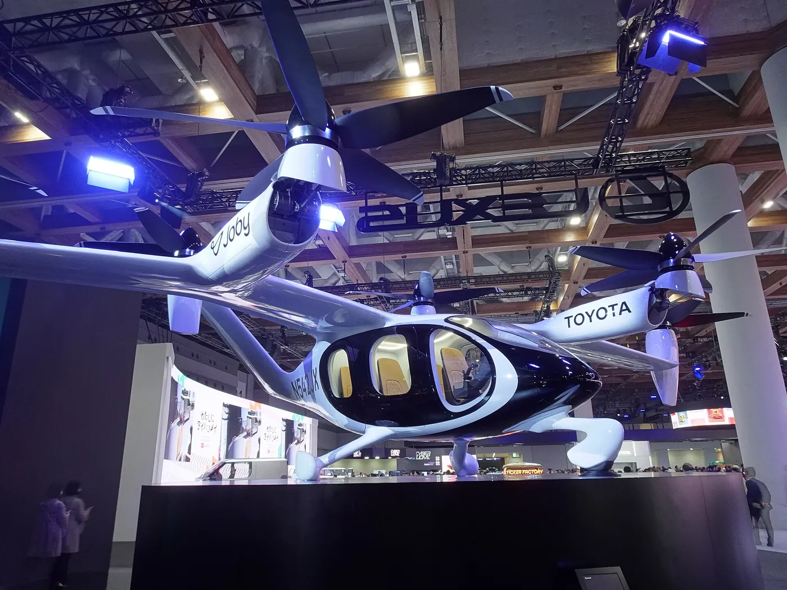
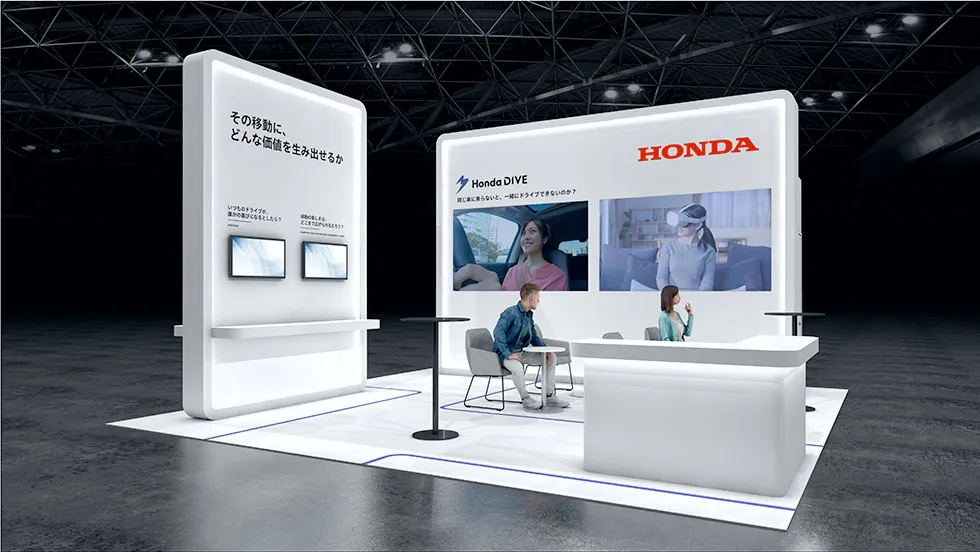
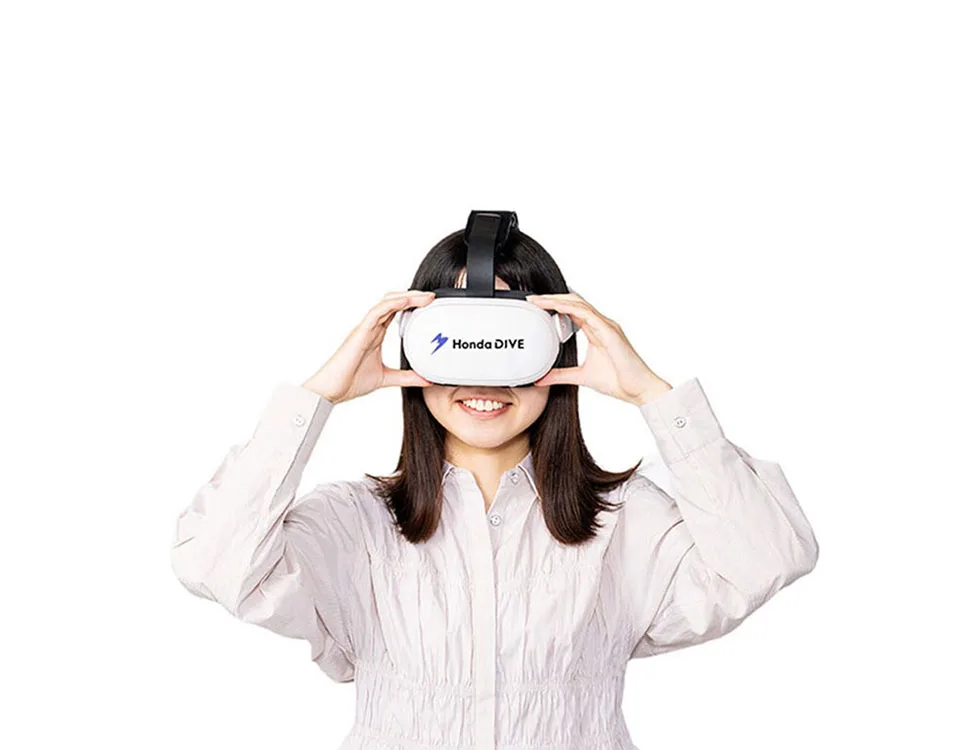
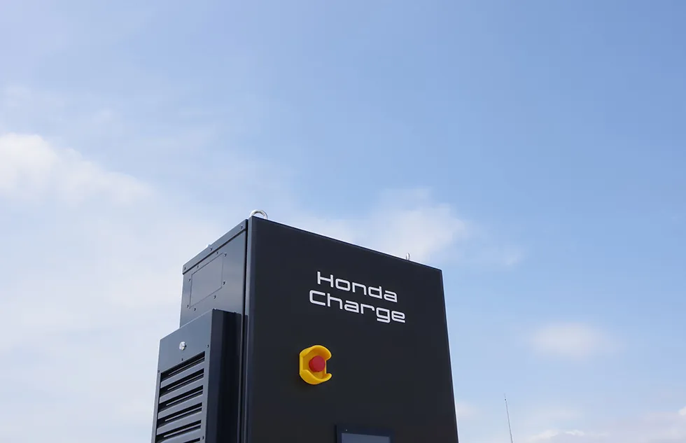
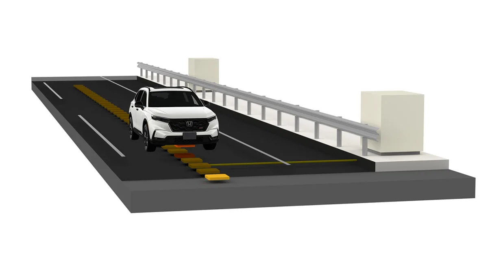
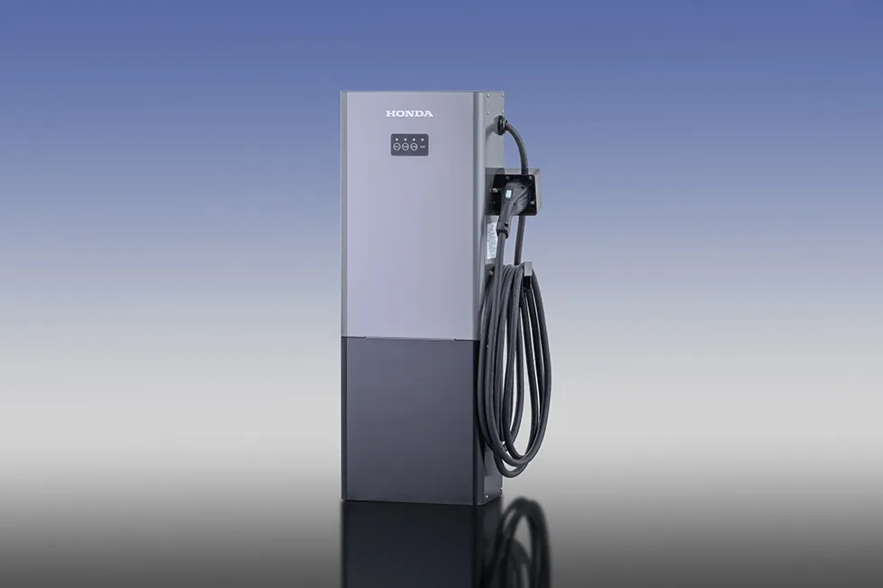
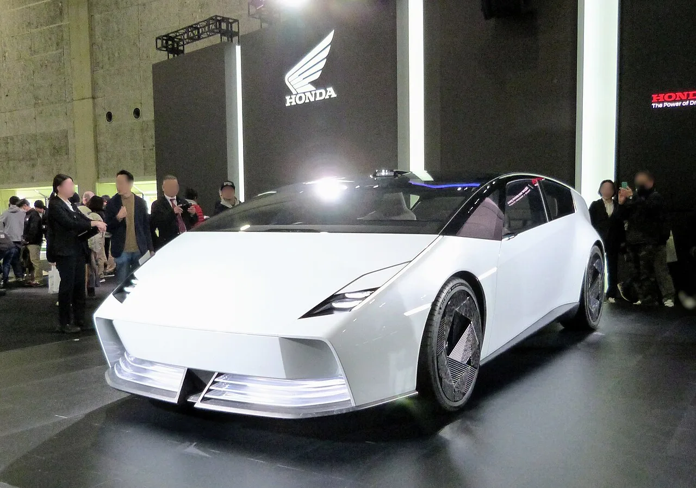

▲ 재팬 모빌리티쇼 비즈위크 2026이 열리는 지바현 마쿠하리 메세(국제전시장 2·3홀) ⓒ Wikimedia Commons(CC BY-SA 3.0)
"10월에 일본 3사가 도쿄에서 신차를 쏟아낸다"는 기사를 봤다면 일정부터 다시 확인해야 한다.
일본 자동차 소식을 찾다 보면 10월 13~16일 마쿠하리 메세와 10월 30일~11월 9일 도쿄라는 서로 다른 일정이 함께 보인다. 공식 사이트와 일본자동차공업회(JAMA) 자료를 확인해 보니 이는 서로 다른 행사의 일정이다. 올해(2026년)는 B2B 성격의 재팬 모빌리티쇼 비즈위크 2026이 열리고, 신차 공개 중심의 일반 관람 쇼는 홀수 해에 도쿄 빅사이트에서 열린다. 올해 도쿄 일정이라고 알려진 10월 30일~11월 9일은 2025년 행사 일정이다.
1. 일정이 두 개인 이유
재팬 모빌리티쇼는 해마다 형태가 번갈아 바뀐다. JAMA는 홀수 해에는 일반 관람 중심의 도쿄 빅사이트 쇼를, 짝수 해에는 기업 간 협업 중심의 비즈위크를 개최한다. 2023년과 2025년은 도쿄 빅사이트 쇼였고 2024년과 2026년이 마쿠하리 비즈위크다.
| 행사 | 일정 | 장소 | 성격 |
|---|---|---|---|
| 비즈위크 2026 | 2026년 10월 13~16일(평일 4일, 10:00~17:00) | 마쿠하리 메세 2·3홀(지바) | B2B, 무료·사전 등록 필수, 공식 확정 |
| 도쿄 일반 관람 쇼 | 2025년 10월 30일~11월 9일 개최 | 도쿄 빅사이트 | 신차·콘셉트카 중심, 이미 종료 |
| 간사이 쇼(오사카) | 2025년 12월 5~7일(3일) | 인텍스 오사카 | 제13회 오사카 모터쇼 개편판, 32개 브랜드, 일반 관람 |
| 다음 도쿄 쇼 | 미발표(홀수 해 패턴상 2027년으로 추정) | 도쿄 빅사이트 예상 | 공식 일정 확인 못함 |
📍 그래서 "10월 30일~11월 9일"은?
2026년 도쿄 쇼 일정으로 소개되는 10월 30일~11월 9일은 2025년 도쿄 행사 일정과 같다. 일부 전시 정보 사이트가 이를 2027년 개최일로 적었을 수 있으나, 이번에 확인한 공식 자료에는 2027년 일정이 나오지 않았다. 올해 이 기간에 도쿄에서 같은 쇼가 열리는 것은 아니다.

▲ 2025년 도쿄 빅사이트에서 열린 재팬 모빌리티쇼 행사장. 올해는 이 쇼가 열리지 않는다 ⓒ RuinDig / Wikimedia Commons(CC BY 4.0)
2. 비즈위크 2026은 어떤 행사인가
자동차 회사만 모이는 쇼가 아니다. 9월 18일 기준 출품사는 217곳이다. 스타트업·대학·연구기관이 114곳, 사업회사가 49곳, 컨소시엄이 20곳(5개 단체), 일본자동차부품공업회 회원사가 21곳, JAMA 회원 완성차 13곳이 참여하며 이 중 해외 참가자는 14곳이다.
| 구분 | 참가 수 |
|---|---|
| 스타트업·대학·연구기관 | 114 |
| 사업회사 | 49 |
| 컨소시엄 | 20(5개 단체) |
| 부품공업회 회원사 | 21 |
| JAMA 회원 완성차사 | 13(전 회원사) |
| 합계 | 217(해외 14 포함) |
프로그램은 네 가지다. 출품 부스, 신규 도입된 공동 창조 가속 프로그램, 비즈니스 매칭 프로그램(기존 Meet-up Box 확대), 미래 모빌리티 포럼이다. 전시는 지식·마음·사람·사물·정보·경제·사회의 7가지 'MOVE' 주제로 구성되며, 행사 전체 슬로건은 'Your move moves the world', 공동 창조 테마는 'MOVE'다. 행사장은 업종이 아니라 "이루고 싶은 미래" 기준의 네 구역(끊기지 않는 생산·물류, 환경과 경제의 지속가능성, 기술과 사람의 행복한 균형, 사람·사물·데이터의 연결)으로 나뉜다. JAMA 회원사 공동 전시는 '무빙 재팬(MOVE JAPAN, 動かし続ける、日本)'이라는 이름으로 멀티패스웨이 연료 보급 촉진, 수소 보급, 공동 물류, 자율주행, 도로 무선 급전, 순환 경제 등 6개 공통 과제를 다룬다(쿠루마 뉴스·베스트카·카 워치 3곳이 같은 내용을 보도). 개막일인 10월 13일에는 JAMA와 일본전자정보기술산업협회(JEITA) 회장 대담이 예정돼 있다.

▲ 2025년 도쿄 쇼의 토요타 부스. 올해 비즈위크 토요타 출품 내용은 확인되지 않았다 ⓒ RuinDig / Wikimedia Commons(CC BY 4.0)
3. 혼다는 무엇을 가져오나 — 신차는 없다
혼다는 신차 없이 서비스·충전 기술을 내놓는다. 혼다 글로벌이 10월 5일 공개한 출품 안내에 따르면 혼다 부스에는 혼다 DIVE가, JAMA 공동 전시 구역에는 나머지 항목이 전시된다. 혼다 R&D는 같은 장소에서 동시 개최되는 CEATEC 2026에도 별도로 출품한다.
| 항목 | 설명 |
|---|---|
| 혼다 DIVE(혼다 부스) | 서로 다른 곳에 있는 사람들이 VR 헤드셋으로 같은 차에 탄 것처럼 차 안과 360도 풍경을 보며 대화·음악을 공유하는 가상 라이드 서비스. 혼다는 이를 실증 시험 중인 서비스로 분류했다 |
| 혼다 차지(JAMA 공동 전시) | 혼다 차지용 급속 충전 장치 |
| 혼다 V2H 스탠드(JAMA 공동 전시) | 자동차와 집 사이 양방향 전력 공급 장치 |
| DWPT 목업(JAMA 공동 전시) | 주행 중 무선 급전 기술(Dynamic Wireless Power Transfer) 기술 소개용 모형 |
| 자원 순환 기술(JAMA 공동 전시) | 폐차 범퍼 재활용 PP를 쓴 이륜차 부품, 바이오 기반 플라스틱 무도장 이륜차 외장 |

▲ 혼다 비즈위크 2026 부스 예상도. 혼다 DIVE 서비스를 중심으로 구성됐다 ⓒ Honda

▲ 혼다 DIVE 체험에 쓰는 VR 헤드셋. 신차가 아닌 서비스 전시다 ⓒ Honda

▲ 혼다 차지(Honda Charge) 급속 충전 장치 ⓒ Honda

▲ 주행 중 무선 급전(DWPT) 개념도. 도로 아래 급전 구간에서 달리는 차에 전력을 보내는 방식이다 ⓒ Honda
✅ 토요타·닛산은?
이번 조사에서 토요타·닛산의 비즈위크 개별 출품 내용은 확인하지 못했다. 13개 완성차사 전부 참가한다는 점과 JAMA 공동 전시 주제는 확인됐고, 모터팬은 토요타·닛산·스바루·마쓰다 등이 기술 중심으로 참가한다고 전했지만 신차나 콘셉트카 공개 계획은 공식 자료에서 발견되지 않았다. 한편 몽디알 공식 참가사 목록 기준으로 파리모터쇼에는 토요타·혼다·스바루가 참가하고 닛산·마쓰다·미쓰비시는 없다.
4. 한국 독자가 알아둘 점
비즈위크는 일반 관람객 대상 이벤트가 아니다. 입장은 무료지만 온라인 사전 등록이 필수이고 평일 낮에만 열린다. 한국에서 일본 신차 소식을 기대하고 마쿠하리를 찾는 일은 권하기 어렵다. 일본 신차·콘셉트카는 다음 도쿄 쇼(2027년 개최로 추정), 또는 각 사의 개별 공개 행사를 기다리는 편이 현실적이다.
- 확인된 사실: 비즈위크는 13~16일 마쿠하리, 완성차 13사 참가, 혼다 출품은 신차 없음
- 미확인: 토요타·닛산 등의 개별 출품, 2027년 도쿄 쇼 정식 일정
- 추정: 일부 미디어의 "일본 3사 신차 공개" 표현은 2025년 도쿄 쇼 일정과 혼동한 것으로 보임
공식 사이트에서 행사 개요와 사전 등록 방법을 확인할 수 있다. 재팬 모빌리티쇼 공식 사이트 바로가기

▲ 혼다 V2H 스탠드. 전기차 배터리 전력을 집에 공급하는 양방향 충전 장치다 ⓒ Honda
5. 2024년 첫 비즈위크는 어땠나
이번이 두 번째 비즈위크다. 2024년 첫 행사는 마쿠하리에서 열렸고, 베스트카 보도에 따르면 비즈니스 매칭 플랫폼 '밋업 박스'에서 약 4,800건의 매칭 신청이 오가 866건의 성사로 이어졌다. 다만 상담 공간이 좁다는 지적이 있어 이번에는 출품사가 부스에 자사 과제를 7가지 'MOVE' 중 하나로 표시하게 하고 네트워킹 구역을 따로 둔다고 한다. 2026년 행사에는 신규 '공동 창조 가속 프로그램'(워크숍, 과제를 먼저 제시하는 리버스 피치)도 도입된다.
| 항목 | 2024년 | 2026년 |
|---|---|---|
| 장소 | 마쿠하리 메세 | 마쿠하리 메세 국제전시장 2·3홀 |
| 동시 개최 | CEATEC 2024 | CEATEC 2026(2024년 이후 두 번째 동시 개최) |
| 매칭 성과 | 약 4,800건 신청, 866건 성사 | 행사 전이라 미집계 |
| 신규 프로그램 | - | 공동 창조 가속 프로그램(워크숍·리버스 피치) |
6. 방문 전 체크리스트
가려면 사전 등록부터 해야 한다. 일반 모터쇼처럼 현장에서 표를 사는 행사가 아니다.
- 등록: 입장은 무료지만 모든 방문객이 온라인 사전 등록 필수. 한 번 등록하면 CEATEC 2026에도 같은 날 입장할 수 있다고 안내됐다
- 시간: 13~16일 평일 10시~17시. 주말 일정은 없다
- 볼 수 있는 것: 기술·서비스 전시, 협업 상담, 미래 모빌리티 포럼. 신차·콘셉트카 공개는 기대하기 어렵다
- 일정 혼동 주의: 10월 30일~11월 9일 도쿄 일정이 보이면 2025년 쇼 기록이다
7. 앞으로의 일정 정리
올해 일본 업계 일정은 비즈위크에서 끝난다고 보면 된다. 다음 도쿄 일반 관람 쇼는 홀수 해 패턴상 2027년이 된다. 정식 개최일은 JAMA 발표를 기다려야 한다. 참고로 2025년에는 도쿄 쇼 외에 12월 5~7일 오사카 인텍스에서 '재팬 모빌리티쇼 간사이 2025'도 열려 혼다 0 시리즈 콘셉트 등이 전시됐다.

▲ 혼다 0 살롱 콘셉트(재팬 모빌리티쇼 간사이 2025, 2025년 12월 5일 촬영). 신차·콘셉트카는 이런 일반 관람 쇼에서 공개된다 ⓒ Aos.1905 / Wikimedia Commons(CC BY-SA 4.0)
8. 요약
재팬 모빌리티쇼 비즈위크 2026은 10월 13~16일 마쿠하리 메세에서 열리는 B2B 행사다. 완성차 13사를 포함한 217사가 참가하지만 신차 공개 쇼가 아니며, 혼다도 신차 없이 DIVE·충전·V2H·무선 급전 기술을 선보인다.
10월 30일~11월 9일은 2025년 도쿄 빅사이트 쇼 일정이다. 올해는 같은 쇼가 열리지 않으며 2027년 개최일은 공식 확인되지 않았다. 토요타·닛산의 개별 출품은 확인하지 못했다.